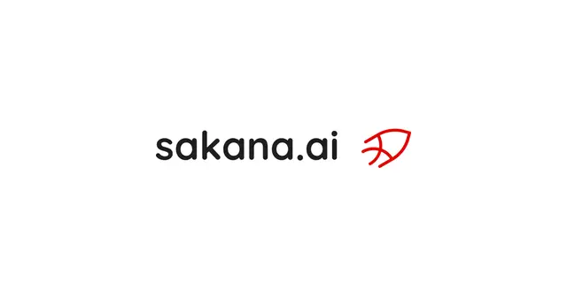

#sakana-ai
Sakana AI・SCSK・住友商事が包括提携、AIを「実験」から産業実装へ

Sakana AI、SCSK、住友商事は2026年9月10日、AIを活用した日本の産業変革と社会課題の解決に向け、包括業務提携で合意しました。AI研究、システム統合、事業開発という3社の強みを組み合わせ、金融・製造、サイバーセキュリティ、社会インフラなどでAIの本番導入を加速します。
記事で取り上げている点
- 3社が狙う「AI実装の壁」の突破
- 金融・製造から本番利用を想定
- Sakana AIの技術をサイバーセキュリティへ
- 特定モデルに依存しないAI基盤へ
- 今後の展望
一次情報（出典） sakana.ai